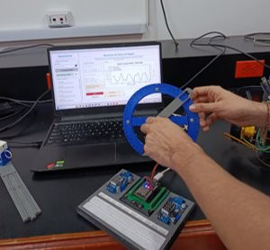
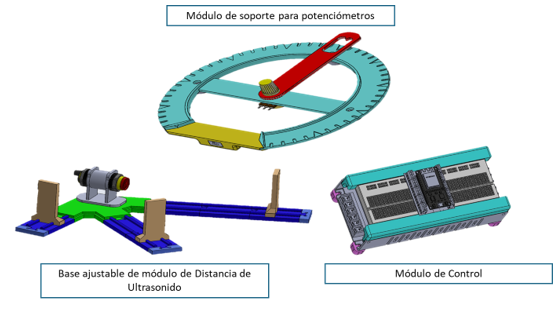
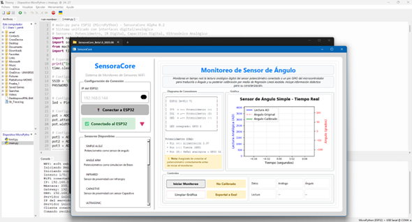

Ingeniería Mecatrónica
Universidad Autónoma del Caribe · Barranquilla
- Título de Ingeniero Mecatrónico (20 de marzo de 2026).
- Tesis meritoria: “Desarrollo de módulos didácticos para la caracterización y calibración de sensores industriales”.
- Artículo ProtoCalib publicado en OnBoard Knowledge Journal (2025).
- Miembro activo de IEEE · INNOVATEC-NM 2024 (México) Internacional
Recuerdos


